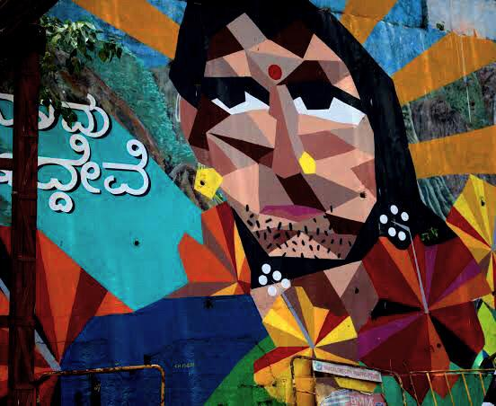

Photo shot at: so and so place

Street-wall paintings are usually the representation of the abstract ideas of the artists. These are independent visual art created in public locations for public visibility. It makes the walls look artistic and realistic. Street art keeps urban areas and their residents energized and inspired. In some areas artists and building owners come together to foster the creation of artwork that can be viewed as beautifying and reviving a city, rather than destroying it.
"Art is unquestionably one of the purest and highest elements in human happiness.
It trains the mind through the eye, and the eye through the mind.
As the sun colours flowers, so does art colour life."
Though any form of artwork catches our attention, it is the street art which fascinates us the most.
they add life to public walls, random empty spaces and the corners of the main crossings. These days a street art fever is raging through urban India and street artists from various parts of the country and all over the world are collaborating with non profit organization to showcase their creative work.
Bengaluru street art scene is also drawing many talented individuals who are voicing various social issues through visual art. The best part of street art is its free and easy accessiblity. This makes it reachable to a much wider audience and Bangalore is one city where they are blooming everywhere in vibrant colours.
Being one of the most happening areas in the city, it’s probably not surprising that MG Road has some of the most impressive graffiti in the city. We particularly love the vivid typography-heavy graffiti found at different spots in the area.
Art can be a way to express your voice, and the way we interpret it can help to amplify voices in the fight for equality. Many creatives have silently contributed to culture, waiting for the moment that society will be ready to speak not just about being transgender – but also transgender art.
Transgender is an umbrella term – it includes not only people with a gender identity that is opposite to their assigned sex; but also people who identify as non-binary or belonging to the “third gender.”
Among institutions researching the history and fighting for the “new canon” are museums such as the Museum of Transgender History and Art. Founded in 2013, MOTHA focuses on collecting examples of transgender visual history
Transgender images are popping up in contemporary art with as much frequency nowadays as fish in formaldehyde and religious figures in elephant dung. In other words, where transgression is called for a gender ambiguous image is never far behind. But we have recently witnessed very particular renderings of the transgender theme: now, at the start of the twenty-first century, it tends to be the female-to-male (FTM) transgender body which captures the popular imagination and the avant-garde eye alike. And it is in these intimations of new or 'other' masculinity that gender takes an unexpected turn.
Credits for the articles: Anusha D Singh
Invitation credits: Anurag Rai.
RT Nagar
Hebbal
Bengaluru- 560032
28 December 2020
The Editor
The Hindustan Times
Bengaluru-560032
Sub: Boosting tourism-industry in India
Sir/Madam
Through the columns of you distinguished newspaper, I wish to highlight the tremendous potentiality that tourism industry has in India. Tourism is one of the biggest and fastest growing industries globally, and it affects the economic, socio- cultural, environmental and educational resources of nations. It can aid in growth and development of various industries directly linked with the tourism industry such as transportation, accommodation, wildlife, arts and entertainment.
It has been a great shame for us that India has not been even among the top 10 in international tourism. We have the breathtaking views of the Himalayas, beautiful valleys, wonderful hill stations and a very rich wildlife. We have the Taj Mahal and Fatehpur Sikri in Agra, Rock garden in Chandigarh, Madurai and Thanjavur in Tamil Nadu, Nalanda in Bihar, Sanchi in Madhya Pradesh and other innumerable monuments and tourist spots in India. Ours is a rich heritage with diversified languages, culture, clothings and delicacies making India a potential tourism-hub like no other.
It is high time that we revamp our strategies and design schemes to keep our tourists safe and satisfied. The preservation of the tourist spots and historical monuments should be given due consideration. Extensive work needs to be done on the cleanliness and the beautification of the country in order to attract foreign tourists.
Domestic tourism can’t be neglected, states like Karnataka and Kerala have shown the way to other states of India. They have attracted domestic tourists by providing clean and affordable accommodation. Enhanced infrastructure such as well-planned roads, airports and good hygiene will surely encourage tourists to visit this beautiful country of ours. Promoting tourism must be a top priority as it can easily be a money spinner for India bringing in valuable income to the country.
A considerable governmental and authoritative effort is significant just as it becomes the moral duty of every citizen to be in their best behavior while putting forth a hospitable nature towars the tourists and making sure that they leave India with tremendous satisfaction.
Thanking You
Yours sincerely
Bhawana
Whilst every effort is taken to avoid errors, We are not responsible for any errors or ommisions, or for the results obtained from the use of this information. Geeksquad shall not take responsibility for the accuracy of any statement, extract, information contained within the pages of this website or the errors and ommisions herein, nor shall any of its contributors who have submitted material for inclusion. We may change or update this site and anything described in it without notice. We will endeavour to ensure that information, materials and data on this site are complete, accurate and up-to-date.Information on this website is for guidance only and cannot cover all circumstances.
While using this site, you agree to have read and accepted our terms of use.
Copyright 2020-21 by Geeksquad. All Rights Reserved.